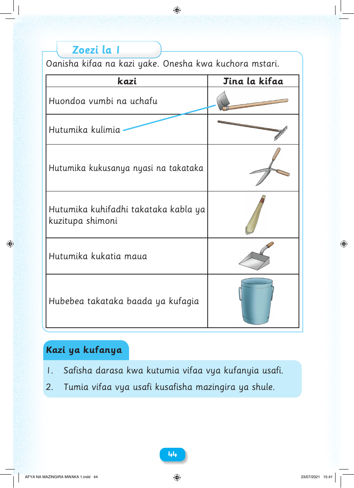

Zoezi la 1 Oanisha kifaa na kazi yake. Onesha kwa kuchora mstari. kazi Jina la kifaa Huondoa vumbi na uchafu Hutumika kulimia Hutumika kukusanya nyasi na takataka Hutumika kuhifadhi takataka kabla ya kuzitupa shimoni Hutumika kukatia maua Hubebea takataka baada ya kufagia Kazi ya kufanya 1. Safisha darasa kwa kutumia vifaa vya kufanyia usafi. 2. Tumia vifaa vya usafi kusafisha mazingira ya shule. 44 AFYA NA MAZINGIRA MWAKA 1.indd 44 23/07/2021 15:41